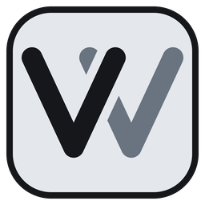
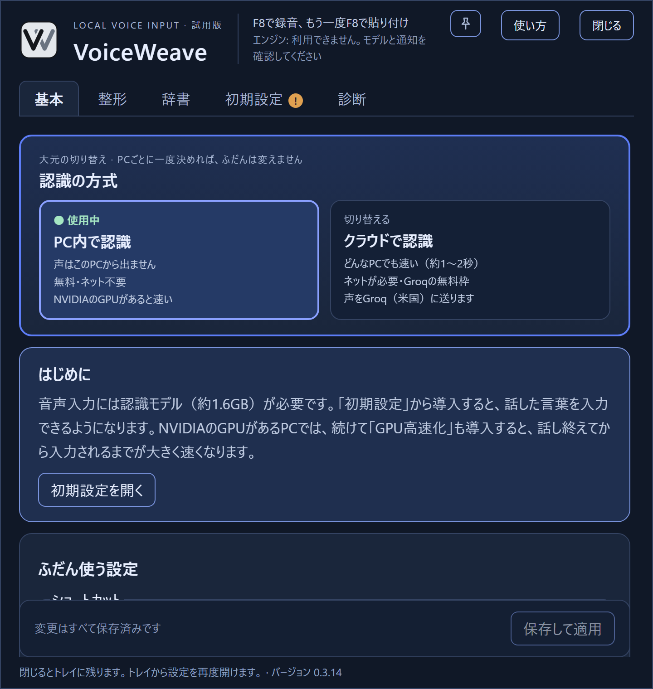
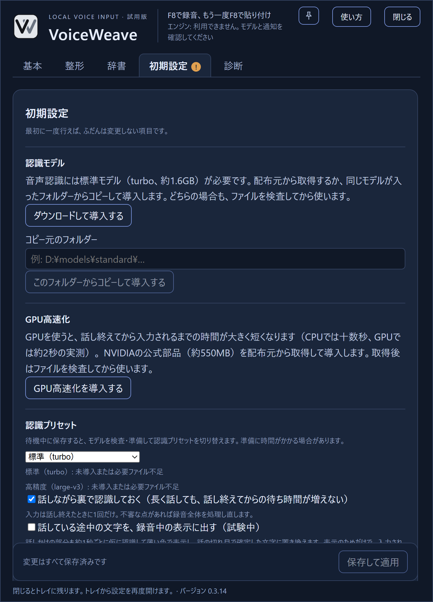
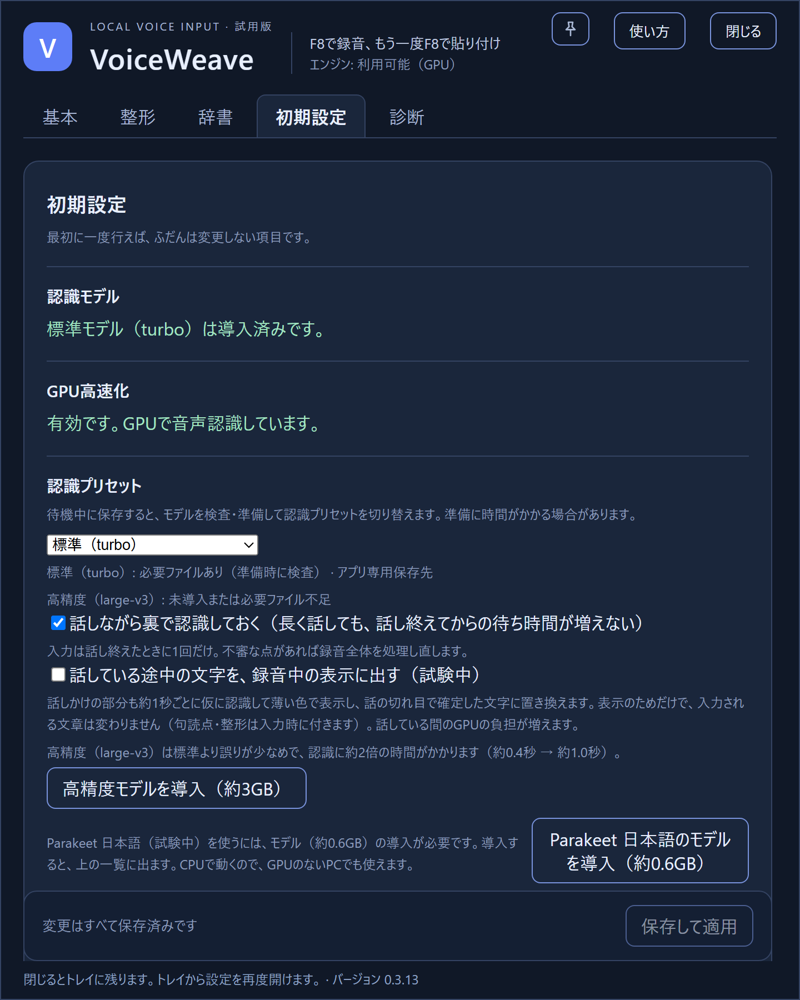
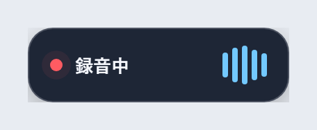
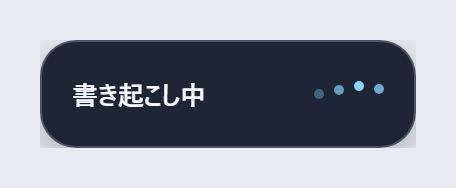
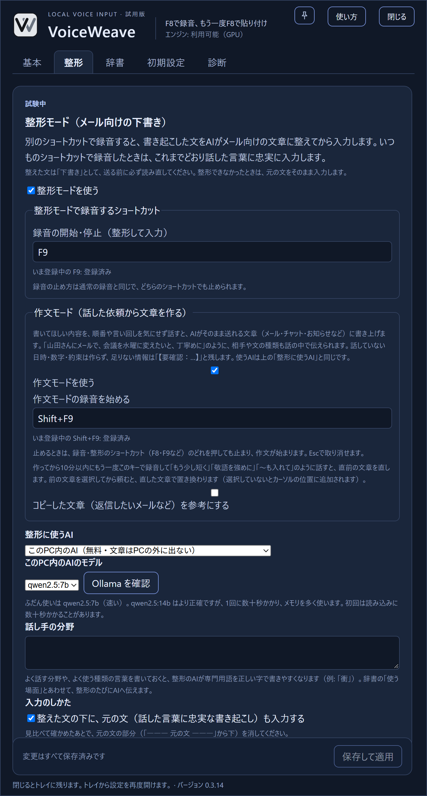
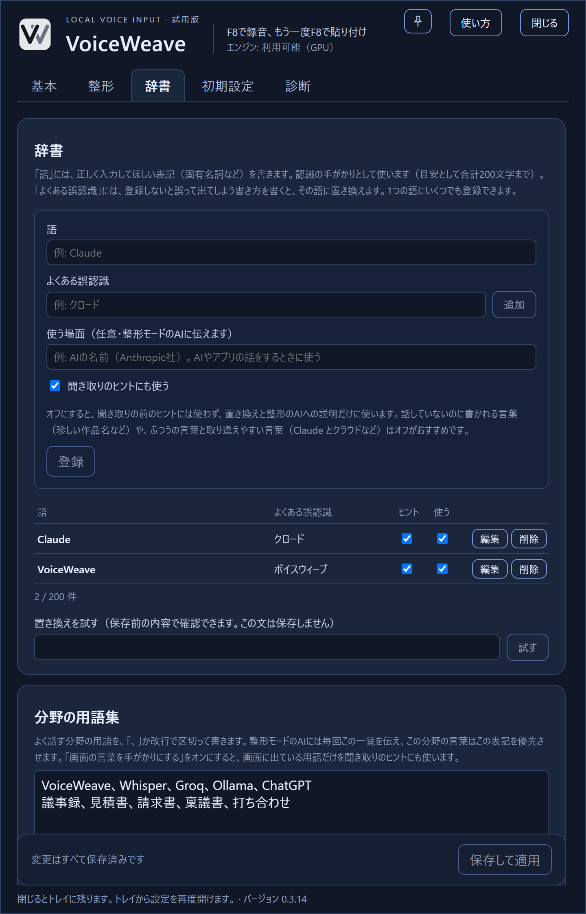
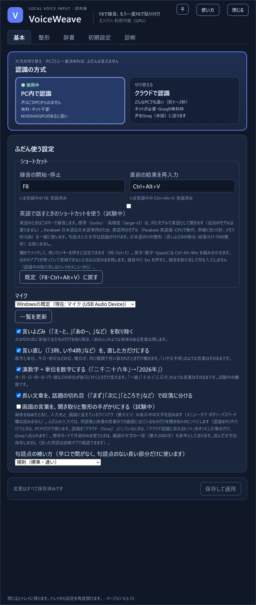

キーを押して話すだけで、話した言葉がカーソルの位置に入力される、Windows用の日本語音声入力ツールです。声の認識はこのPCの中で行います。
VoiceWeaveは、声の認識をこのPCの中で行います。そのため、PCの性能で速さと安定が大きく変わります。インストールの前に、自分のPCに合う使い方を確かめてください。
Ctrl+Shift+Esc でタスクマネージャーを開き、「パフォーマンス」を見ます。
| あなたのPC | おすすめの使い方 | 使い心地 |
|---|---|---|
| NVIDIAのGPU ＋メモリ16GB以上 | PC内で認識（標準）＋GPU高速化。整形のAIもPC内で無料で使える | とても快適 話し終えて約2秒で入力 |
| NVIDIAのGPU ＋メモリ8GB | PC内で認識（標準）＋GPU高速化。整形のAIは外部（OpenAI / Anthropic）がおすすめ | 快適 ほかのアプリを開きすぎると不安定に |
| GPUなし ＋メモリ16GB以上 | クラウドで認識（Groq）。または、PC内で認識の「Parakeet 日本語」 | 快適 Groqなら約1〜2秒 |
| GPUなし ＋メモリ8GB | クラウドで認識（Groq）がおすすめ。整形のAIも外部を使う | Groqなら使える PC内だけだと待ち時間が長く、途切れやすい |
GPUなしで標準・高精度の認識を使うと遅くなりますNVIDIAのGPUがないPCで「標準（turbo）」や「高精度」を使うと、1回ごとに十数秒以上待つことがあります。GPUのないPCでは、「クラウドで認識（Groq）」か「Parakeet 日本語」を選んでください。また、PC内のAIで整形するには、NVIDIAのGPUとメモリ16GB以上が必要です。
Groqは、音声の認識やAIの処理を、インターネットの向こうの高速なコンピューターで行ってくれる米国のサービスです。VoiceWeaveで「クラウドで認識」を選ぶと、録音した声をGroqに送り、文字にして返してもらいます。自分のPCの性能に関係なく速いのが一番の長所です。
Groqを使うには、GroqのAPIキーが必要です。次の手順で作れます（5分ほど）。
gsk_ で始まるキーが表示されるので、コピーします（この画面を閉じると二度と表示されないので、閉じる前にコピーします）。APIキーは他人に教えないでくださいキーを知られると、あなたの無料枠を他人に使われてしまいます。VoiceWeaveはキーをWindowsの資格情報マネージャーに保存し、画面やファイルには残しません。
必要なもの: Windows 10 / 11（64ビット）、マイク、ディスクの空き約3GB、メモリ8GB以上（16GB以上がおすすめ）。NVIDIAのGPUがあると速くなりますが、なくても使えます。
VoiceWeave_x.y.z_x64-setup.exe をクリックして保存します。なぜこの画面が出るの？個人が作ったアプリで、有料の電子署名をしていないためです。ウイルスが見つかったという意味ではありません。
新しい版に更新するときトレイのアイコンからVoiceWeaveを終了してから、新しいインストーラーを実行します。設定・辞書・認識モデルはそのまま残ります。
初めて設定画面を開くと「はじめに」の案内が出ます。声を文字にするための認識モデルを、最初に1回だけ導入します。



「基本」タブのいちばん上で、声を文字にする場所を選べます。ふだんは「PC内で認識」のままで大丈夫です。
PC内の認識には種類があります（「初期設定」タブの「認識プリセット」）。
| 種類 | 向いているPC |
|---|---|
| 標準（turbo） | ふだんはこれ。GPUがあると速い |
| 高精度（large-v3） | より正確だが約2倍遅く、メモリも多く使う（約3GBの追加導入） |
| Parakeet 日本語 | CPUだけでも速い。GPUのないPC向け（約0.6GBの追加導入） |
メモ帳、メール、チャットなど、文字を打てる場所ならどこでも使えます。


| キー | できること |
|---|---|
| F8 | 録音の開始・停止。話した言葉に忠実に入力します |
| Esc | 録音中に押すと、録音を取り消して何も入力しません |
| Ctrl+Alt+V | 直前の結果をもう一度入力します |
| F9 / Shift+F9 | 整形モード・作文モード（次の章） |
| Shift+F8 | 英語で話すとき（設定でオンにすると使えます） |
入力先が変わったときは、勝手に入力しません録音中に別のウィンドウへ切り替えたり、画面をロックしたりすると、文字はクリップボードへコピーするだけにします。入力したい場所で Ctrl+V を押して貼り付けてください。
AIを使って、話した内容を文章に仕上げるモードです。「整形」タブで「整形モードを使う」をオンにすると使えます。

| AI | 特徴 |
|---|---|
| このPC内のAI | 無料で、文章はPCの外に出ません。Ollama が必要です（「Ollama を確認」から導入を案内します）。GPUのあるPC向け |
| OpenAI / Anthropic | 外部のAI。各社のAPIキーが必要で、使った分だけ料金がかかります（1回あたり0.1円程度） |
APIキーの保管入力したAPIキーはWindowsの資格情報マネージャーに保存され、ファイルや画面には残りません。
AIが作った文は「下書き」です送る前に必ず読み直してください。
人の名前や専門用語が正しく出ないときは、「辞書」タブに登録します。

用語集の初期値は見本です最初に入っている言葉は書き方の例なので、自分がよく話す言葉に書き換えてください。変更したら、下の「保存して適用」を押します。
「基本」タブで、ショートカットキーの変更、使うマイクの選択、自動で整える機能のオン・オフができます。変えたら、画面下の「保存して適用」を押します。

Windowsの「設定」→「アプリ」→「インストールされているアプリ」から VoiceWeave をアンインストールします。認識モデルと設定は %LOCALAPPDATA%\local.voiceweave.app と %APPDATA%\local.voiceweave.app に残るので、不要なら削除してください。
このソフトは PolyForm Noncommercial License 1.0.0 で公開しています。非営利の使用・改造・共有は自由で、個人が自分の仕事の道具として使うことも認めています。販売、有料での配布、有料サービスへの組み込みはできません。
よかったら、使ってみてください個人が趣味と学習を兼ねて、AIと一緒に作っている試用版です。すべてのPCで確かめられてはいませんが、文章入力が少しでも楽になればうれしいです。気づいたことはぜひ教えてください。改造も大歓迎です。